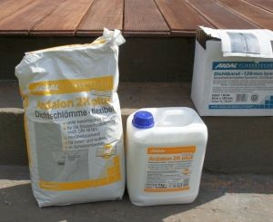

Ардалон 1К плюс
Ардалон 1К плюс — однокомпонентный эластичный гидроизоляционный мелкозернистый цементный раствор, модифицированный полимерами.

Ардалон 1К плюс применяется для внутренних и наружных работ и предназначен для гидроизоляции строительных конструкций, гидроизоляции под керамической плиткой и плитами на полу и стенах в сырых помещениях, в душевых, на балконах и террасах, в плавательных бассейнах и в других строительных объектах, подверженных образованию трещин, высокой водной нагрузке при эксплуатации и очистке.Особенности и преимущества материала Ардалон 1К плюс:
- однокомпонентный;
- обеспечивает гидроизоляцию под керамические покрытия;
- не боится мороза при транспортировке;
- для внутренних и наружных работ;
- имеет простую технологию применения без специальных приспособлений и сложных подготовительных этапов;
- наносится щеткой, валиком или шпателем, зубчатой рейкой;
- затвердевает без образования трещин;
- водостойкий и эластичный;
- перекрывает образующиеся трещины;
- соответствует классам водной нагрузки А1, А2, В (AbP - Общестроительный надзорный сертификат);
- имеет низкое содержание солей хромовой кислоты по норме TRGS 613;
- всегда имеет высокое качество;
- имеет относительно не высокую цену;
- по соотношению цена/качество значительно превосходит аналоги.
Ардалон 1К плюс поставляется в виде сухого порошка модифицированного полимерами мелкозернистого цементного раствора в мешках по 20 кг. Порошок не боится мороза при транспортировке. Для приготовления раствора порошок затворяют водой и перемешивают мешалкой до однородного состояния без комков. Если смесь будут наносить валиком или щеткой, то на 20 кг потребуется 3,8 литра воды, а для нанесения зубчатым шпателем – 3,4 литра, соответственно. После перемешивания раствору необходимо дать вызреть в течение трех минут и снова тщательно перемешать, после чего его можно наносить.
Основание, на которое будет наноситься Ардалон 1К плюс, должно быть прочным, ровным, достаточно сухим, чистым, с мелкопористой поверхностью, без выбоин, видимых крупных трещин или грата. Подходящими основаниями являются цементные стяжки, штукатурка, бетон, каменная кладка, а также старая плитка. Стяжки должны содержать не более 0,5% остаточной влаги. Поверхность основания не должна содержать вещества, способные ухудшить прилипание покрытия (масла, высолы, загрязнения). Имеющиеся трещины нужно заделать.
Если имеются сухие и впитывающие поверхности, то перед нанесением первого слоя шлама Ардалон 1К плюс их следует слегка смочить и подождать некоторое время, чтобы влага впиталась в поверхность. Наносить Ардалон 1К плюс следует в 2 слоя при температуре от +5оС и до +30оС. Жизнеспособность смеси при температуре 20оС составляет около 60 минут, поэтому замешанный материал должен быть израсходован в течение 1 часа.
Второй слой наносится после того, как первый схватится достаточно сильно, чтобы его не повредить мастерком (примерно через 3 - 4 часа). Ардалон 1К плюс можно наносить и при помощи кисти или мастерка. Однако, чтобы обеспечить требуемые толщину слоев и нормативный расход материала более удобно использовать зубчатый шпатель с системой зубьев 3 х 3 х 3 мм (С3). В этом случае, каждый слой раствора наносится зубчатым шпателем и затем разравнивается кельмой. Суммарная толщина двух слоев должна быть не менее 2 мм, что соответствует расходу примерно 3,5 кг /м2 на два слоя. Через 1-2 суток можно укладывать керамическую облицовку. Для укладки плитки рекомендуется использовать тонкослойные клеевые растворы Ардал Бест S2 или Ардафлекс Топ. Через 3 суток нанесенный гидроизоляционный слой достигает полной нагрузочной способности, становится полностью водонепроницаемым, эластичным и перекрывает образующиеся трещины.
Расход материала Ардалон 1К плюс
При слое 2 мм - ок. 2,5 кг/м2.
При слое 3 мм – ок. 3,5 кг/м2 (в плавательных бассейнах).
Форма поставки материала Ардалон 1К плюс
Мешок 20 кг.